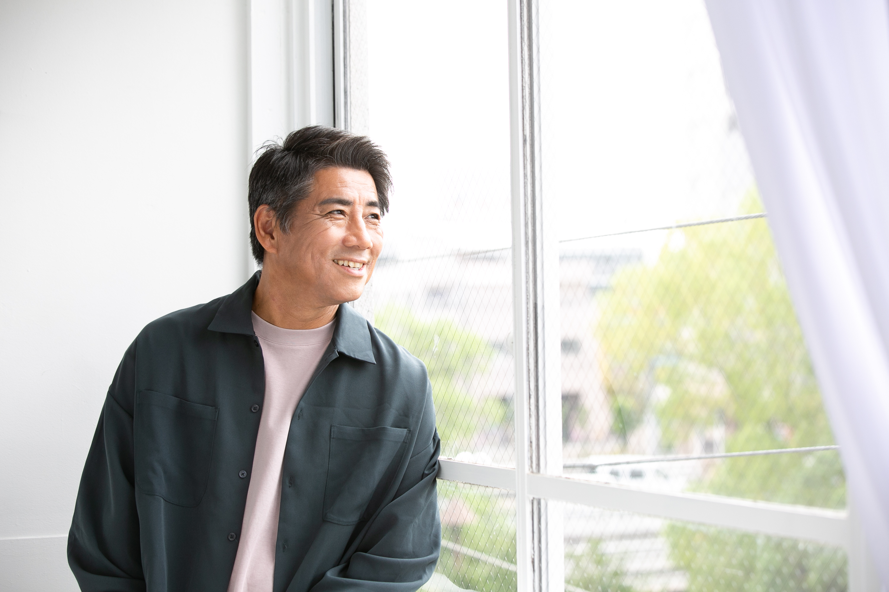
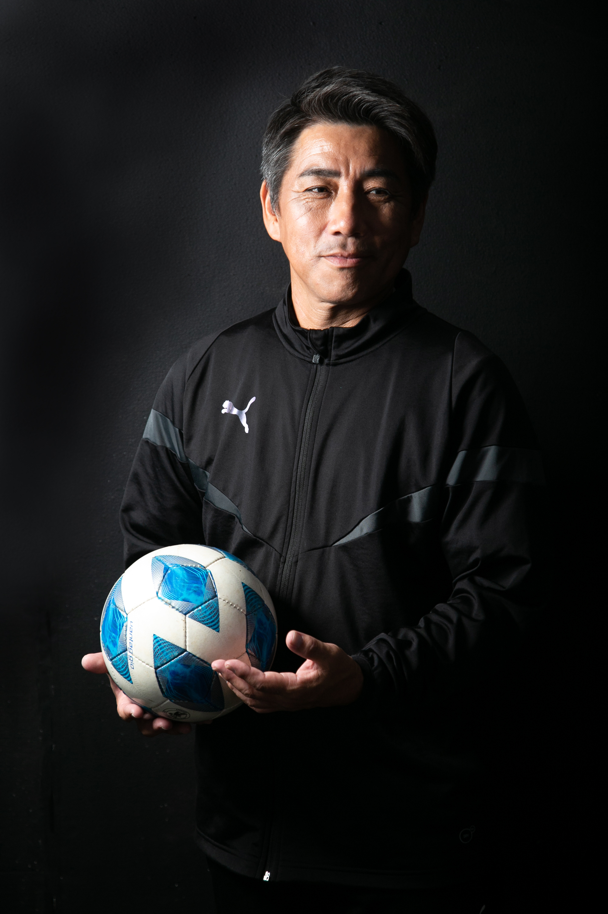
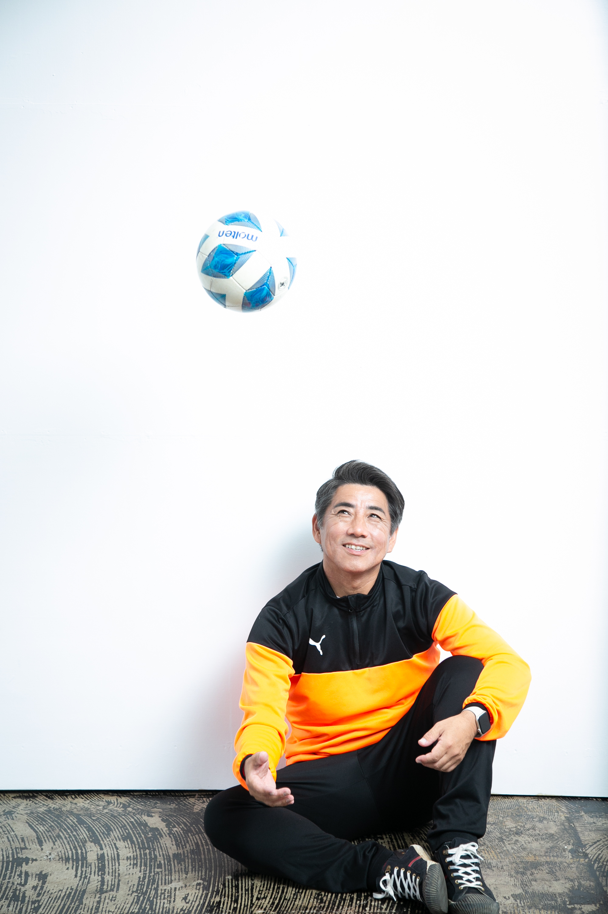

子育ての現場も、スポーツの現場も、悩みは尽きないもの。
もう、一人で抱え込まないでください。
こぶさんメソッド｜自立の扉を開く、3つのカギ
指示命令の「強制スイッチ」を卒業し、子どもの中にある答えを「問い」で引き出す。たった一言の言い換えで、指示待ちだった子が「やりたい！」と目を輝かせ始めます。
つい手出しをしたくなる自分を卒業し、子どもが試行錯誤できる「余白」をプレゼントする。大人が一歩下がることで、子どもの主体性は爆発的に育ちます。
自由放任ではなく、親子で「目指すべきゴール」を対話で共有する。納得感のある基準（北極星）があるからこそ、子どもは自分の力で安全に、遠くまで歩いていけるようになります。
「お父さん、もう言わないで」と言えなかった
あの日の僕が、30年かけて辿り着いた真実。
私自身も、かつて子どもの笑顔を消していた
一人だからこそ、伝えたい。
小学生の頃、私はサッカーに夢中でした。でも、試合が終わるのが怖かった。家へ帰れば、お父さんの「お説教」が待っていたからです。
県大会出場をかけた試合。残り数十秒で失点し、2-3の惜敗。仲間もコーチも保護者も涙した、感動の試合でした。それでも、家に帰るとお説教。
「もう、サッカーなんて嫌いだ」。大好きだったボールを置いたあの日の絶望を、私は今も忘れません。たった一人の大人の言葉が、子どもの情熱を奪ってしまうのです。
指導者になった私は、チームを強くしたい一心で走り続け、めちゃくちゃ強いチームを作ったこともありました。それでも、何かが物足りなかった。
転機は、世界基準のコーチ養成講座。そこで学んだのは、スキル以上に大切な「安心・安全な環境」でした。
ハッとしました。振り返れば、子どもたちに怒鳴り、指示し続けていた自分がいた。「コーチが怖い」「辞めたい」という声を聞いた時、突きつけられました。
私は、自分が一番なりたくなかった「あの日のお父さん」になっていたのです。恐怖で支配しても、子どもは育たない。その痛烈な気づきが、私のすべてを変えました。
保育園の送り迎えで、いつも私に無邪気にキックをしてくる女の子がいました。でもある日、お母さんと一緒の彼女は借りてきた猫のようにおとなしく、「言わないで」という目で私を見つめたのです。「うちの子がそんなことするはずない」と信じ込むお母さんの横で、必死に「良い子」を演じる彼女。
そこで確信しました。子どもの笑顔を消しているのは、私たち大人なんだと。
サッカーコーチを変えるだけでは足りない。一番身近にいる「親」も変わらなければ、子どもは救われない。子どもに関わるすべての大人が変われば、子どもはもっと輝ける。それが、この活動を始めた理由です。
子どもが一番愛されたいと願っている相手。それは、お母さんです。サッカーのピッチ以上に、家庭というフィールドでの「声かけ」こそが、子どもの人生を決めます。
お母さんが「魔法の声かけ」を手に入れ、おせっかいという呪縛から解放されれば、子どもは仮面を脱ぎ捨て、自分らしく輝き始めます。
子育てに悩むお母さんへ。選手の可能性を引き出したいコーチへ。チームを変えたい指導者へ。あなたの現場に、必ず答えがあります。私は、30年のすべてをかけて、あなたに伴走します。
人が育てば、地域が変わる。世界が変わる。
「教える」から「引き出す」へ。
一生モノの自立を育む「人づくり」の研究室。

サッカーコーチとしてピッチに立ち続けて30年。これまで指導した子どもたちは3,000人を超えます。私の誇りは、これまでに関わった中で「ぐれた子が一人もいない」こと。どんな子の中にもある「輝く種」を信じ、引き出し続けてきました。
私のメソッドは、単なる精神論ではありません。脳科学・心理学・VAK特性・行動心理カード・しつもんメンタルトレーニング……。膨大な学びを30年の指導現場で実践し、改善を繰り返して辿り着いた「科学的根拠に基づいた、子どもが自ら動き出すアプローチ」です。
長年の指導で確信したのは、「ピッチで輝く子の共通点は、家庭での声かけにある」ということ。子どもを変えようとするのではなく、大人の関わり方を少し変えるだけ。指導者として、そして一人の親として、ピッチと家庭を笑顔で繋ぐことが私の使命です。
家庭、ピッチ、そして自分自身。
どこから始めますか？



家庭、ピッチ、自分の心。
昨日までの景色が変わった喜びの記録。
次は、あなたの番です。
景色が変わる準備は、できていますか？
一人で悩まなくて大丈夫。
魔法の扉を、一緒に開きましょう。
日々アップデートされる「自立」へのヒント。
こぶさんと、一緒に始めませんか？
親御さんも、指導者の方も、
まずはここから繋がってください。
セミナーのご依頼・メディア取材・法人向けのご相談など、
お気軽にお問い合わせください。